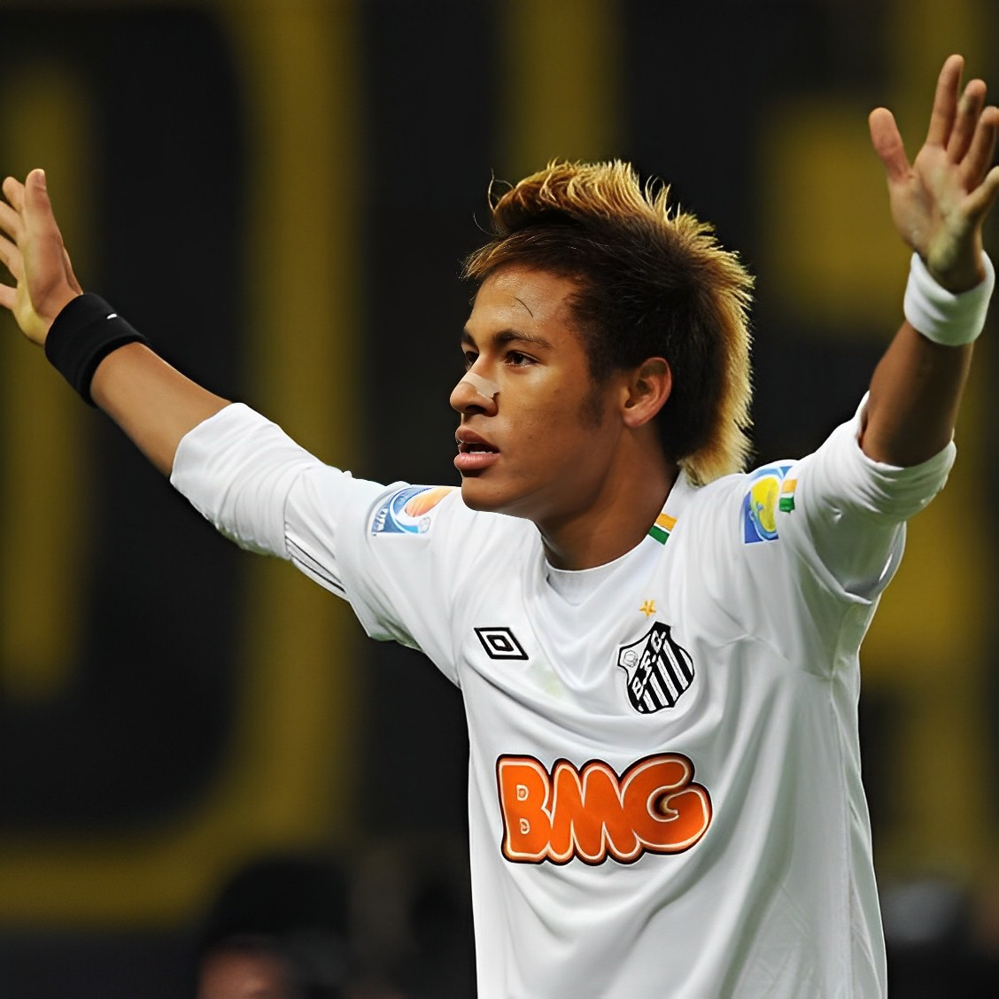
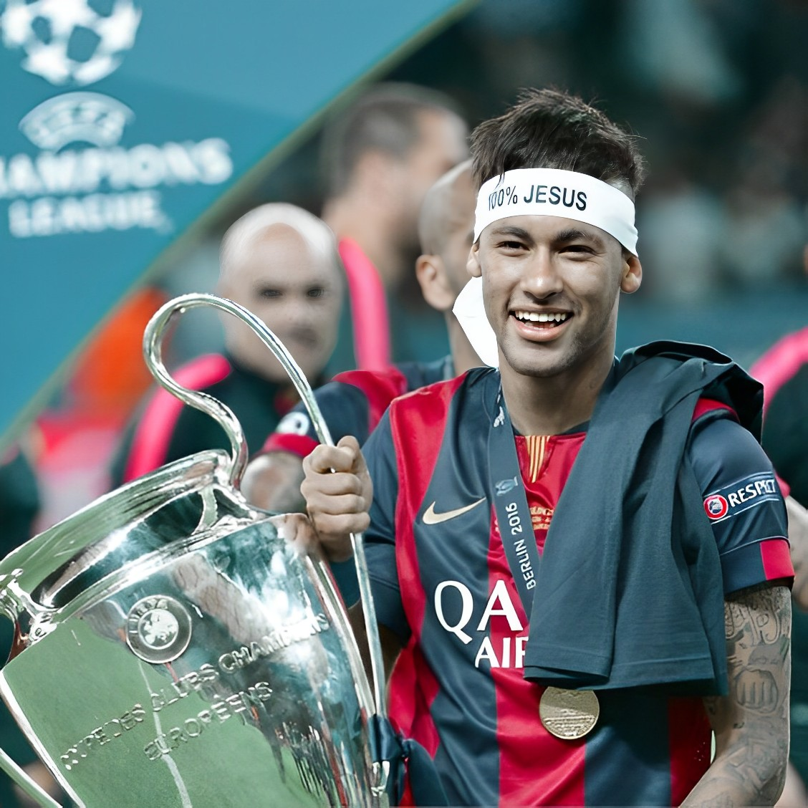
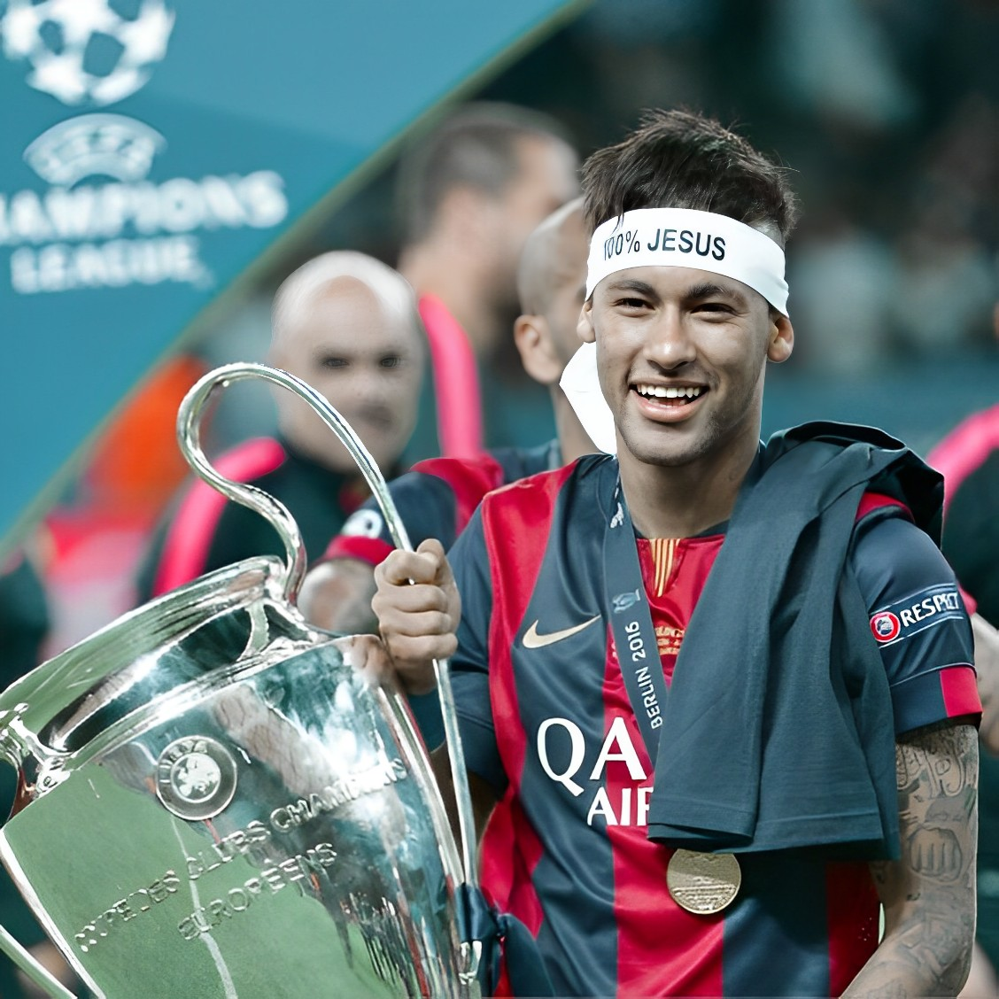

SANTOS
Neymar mulai bermain sepak bola pada usia dini dan dia segera ditemukan oleh Santos FC,
yang menawarinya kontrak pada tahun 2003.
Neymar membuat debut profesional pada tanggal 7 Maret 2009, meskipun baru berumur 17 tahun.
BARCELONA
Neymar mengumumkan ia akan menandatangani kontrak dengan FC Barcelona pada tanggal 27 Mei tahun 2013.
Neymar telah diresmikan oleh Barcelona dan menandatangani kontrak yang akan membuat dia di klub sampai Juni 2018.
PSG
Pada tanggal 3 Agustus 2017, Neymar resmi pindah ke Paris Saint-Germain dengan seharga €222.000.000 yang mana menjadikan dirinya sebagai pemain termahal di dunia,
memecahkan rekor setelah ditebus seharga €105.000.000.
 
